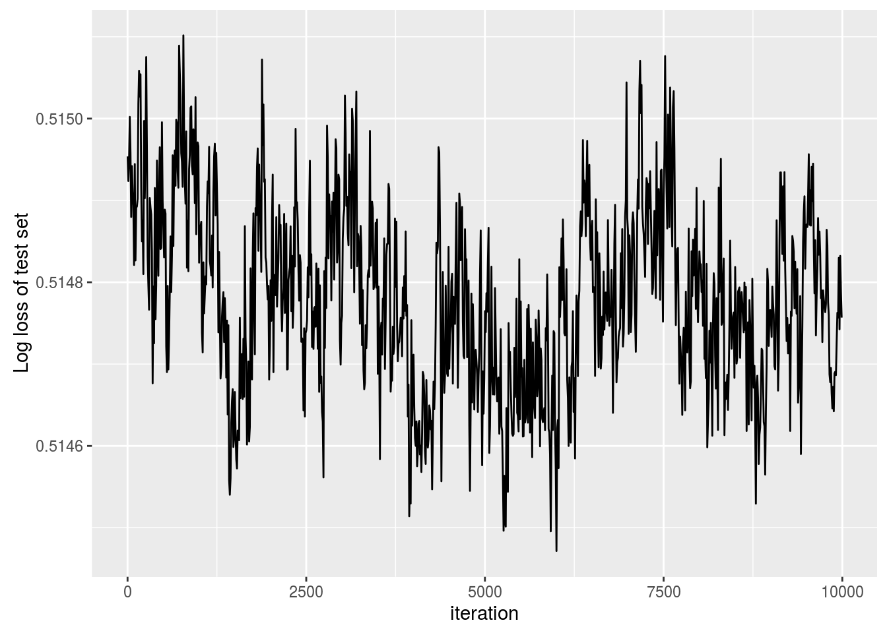

In this example we use the package to infer the bias and coefficients in a logistic regression model using stochastic gradient Langevin Dynamics with control variates. We assume we have data \(\mathbf x_1, \dots, \mathbf x_N\) and response variables \(y_1, \dots, y_N\) with likelihood \[ p(\mathbf X, \mathbf y | \beta, \beta_0 ) = \prod_{i=1}^N \left[ \frac{1}{1+e^{-\beta_0 + \mathbf x_i \beta}} \right]^{y_i} \left[ 1 - \frac{1}{1+e^{-\beta_0 + \mathbf x_i \beta}} \right]^{1-y_i} \]
First let’s load in the data, we will use the cover type dataset commonly used to benchmark classification models. We use the dataset from LIBSVM, which transforms the problem from multiclass to binary.
library(sgmcmc)
# Load data from package
data("covertype")First we’ll remove about 10000 observations from the original dataset to form a test set, this will be used to check the validity of the algorithm. Then we’ll separate out the response variable y and the explanatory variables X. The response variable is the first column in the dataset.
testObservations = sample(nrow(covertype), 10^4)
testSet = covertype[testObservations,]
X = covertype[-c(testObservations),2:ncol(covertype)]
y = covertype[-c(testObservations),1]
dataset = list( "X" = X, "y" = y )In the last line we defined the dataset as it will be input to the relevant sgmcmc function. A lot of the inputs to functions in sgmcmc are defined as lists. This improves flexibility by enabling models to be specified with multiple parameters, datasets and allows separate tuning constants to be set for each parameter. We assume that observations are always accessed on the first dimension of each object, i.e. the point \(x_i\) is located at X[i,] rather than X[,i]. Similarly the observation \(i\) from a 3d object Y would be located at Y[i,,].
Now we want to set the starting values and shapes for our parameters. We can see from the likelihood equation we have two parameters, the bias \(\beta_0\) and the coefficients \(\beta\). We’ll just set these to start from zero. Similar to the data, these are just a list with the relevant names.
# Get the dimension of X, needed to set shape of params$beta
d = ncol(dataset$X)
params = list( "bias" = 0, "beta" = matrix( rep( 0, d ), nrow = d ) )Now we’ll define the functions logLik and logPrior. It should now become clear why the list names come in handy. The function logLik should take two parameters as input: params and dataset. These parameters will be lists with the same names as those you defined for params and dataset earlier. There is one difference though, the objects in the lists will have automatically been converted to TensorFlow objects for you. The params list will contain TensorFlow tensor variables; the dataset list will contain TensorFlow placeholders. The logLik function should take these lists as input and return the value of the log likelihood as a tensor at point params given data dataset. The function should do this using TensorFlow operations, as this allows the gradient to be automatically calculated; it also allows the wide range of distribution objects as well as matrix operations that TensorFlow provides to be taken advantage of. A tutorial of TensorFlow for R is beyond the scope of this article, for more details we refer the reader to the website of TensorFlow for R. With this in place we can define the logLik function as follows
logLik = function(params, dataset) {
yEstimated = 1 / (1 + tf$exp( - tf$squeeze(params$bias + tf$matmul(dataset$X, params$beta))))
logLik = tf$reduce_sum(dataset$y * tf$log(yEstimated) + (1 - dataset$y) * tf$log(1 - yEstimated))
return(logLik)
}Next we want to define our log-prior density, we assume each \(\beta_i\) has an independent Laplace prior distribution, with location 0 and scale 1, so that \(\log p( \beta ) = - \sum_{i=0}^d | \beta_i|\). Similar to the log-likelihood function, the log-prior density is defined as a function with input params. In our case the definition is
logPrior = function(params) {
logPrior = - (tf$reduce_sum(tf$abs(params$beta)) + tf$reduce_sum(tf$abs(params$bias)))
return(logPrior)
}Finally, we’ll set the stepsize parameters for the algorithm, along with the minibatch size. sgldcv relies on two stepsize parameters, one for the optimization step and one for the MCMC step. To allow stepsizes to be set for different parameters, the form of the stepsizes for the MCMC will be lists with names corresponding to each of the names in params. The optimization step will just be one value as the stepsize is automatically tuned
stepsizesMCMC = list("beta" = 2e-5, "bias" = 2e-5)
stepsizesOptimization = 1e-1Alternatively, we can simply use the shortcut stepsizesMCMC = 2e-5 which would set the stepsizes for each parameter to 2e-5. The optimization step is performed using the TensorFlow AdamOptimizer.
Now we can run our SGLD-CV algorithm using the function sgldcv from the sgmcmc package, which returns a list of Markov chains for each parameter as output. Use the argument verbose = FALSE to hide the output of the function. As the dataset size is quite large, we’ll change the minibatchSize from its default 0.01 * N to 500. To allow a small 1000 iteration burn-in we’ll set the number of iterations to be 11000
output = sgldcv(logLik, dataset, params, stepsizesMCMC, stepsizesOptimization, logPrior = logPrior, minibatchSize = 500, nIters = 11000 ) ##
## Finding initial MAP estimates...
## Iteration: 100 Log posterior estimate: -338800.15625
## Iteration: 200 Log posterior estimate: -332179.03125
## Iteration: 300 Log posterior estimate: -312205.46875
## Iteration: 400 Log posterior estimate: -303275.40625
## Iteration: 500 Log posterior estimate: -306654.8125
## Iteration: 600 Log posterior estimate: -304540.6875
## Iteration: 700 Log posterior estimate: -286507
## Iteration: 800 Log posterior estimate: -288483.78125
## Iteration: 900 Log posterior estimate: -291616.65625
## Iteration: 1000 Log posterior estimate: -296300.09375
## Iteration: 1100 Log posterior estimate: -288218.40625
## Iteration: 1200 Log posterior estimate: -296300.5
## Iteration: 1300 Log posterior estimate: -310536.78125
## Iteration: 1400 Log posterior estimate: -304102.4375
## Iteration: 1500 Log posterior estimate: -311841.34375
## Iteration: 1600 Log posterior estimate: -299071.53125
## Iteration: 1700 Log posterior estimate: -292858.5
## Iteration: 1800 Log posterior estimate: -308982.625
## Iteration: 1900 Log posterior estimate: -293165.125
## Iteration: 2000 Log posterior estimate: -264710.0625
## Iteration: 2100 Log posterior estimate: -283278.15625
## Iteration: 2200 Log posterior estimate: -297883.03125
## Iteration: 2300 Log posterior estimate: -288992.03125
## Iteration: 2400 Log posterior estimate: -297569.34375
## Iteration: 2500 Log posterior estimate: -315328.9375
## Iteration: 2600 Log posterior estimate: -295417.34375
## Iteration: 2700 Log posterior estimate: -286537.1875
## Iteration: 2800 Log posterior estimate: -298446.6875
## Iteration: 2900 Log posterior estimate: -302877.5625
## Iteration: 3000 Log posterior estimate: -290776.375
## Iteration: 3100 Log posterior estimate: -290457.15625
## Iteration: 3200 Log posterior estimate: -290072
## Iteration: 3300 Log posterior estimate: -305762.0625
## Iteration: 3400 Log posterior estimate: -307837.5625
## Iteration: 3500 Log posterior estimate: -306294.90625
## Iteration: 3600 Log posterior estimate: -289988.8125
## Iteration: 3700 Log posterior estimate: -275384.09375
## Iteration: 3800 Log posterior estimate: -278042.09375
## Iteration: 3900 Log posterior estimate: -307797.71875
## Iteration: 4000 Log posterior estimate: -292852.5
## Iteration: 4100 Log posterior estimate: -294135.4375
## Iteration: 4200 Log posterior estimate: -283132.1875
## Iteration: 4300 Log posterior estimate: -290841.90625
## Iteration: 4400 Log posterior estimate: -289243.5625
## Iteration: 4500 Log posterior estimate: -304111.09375
## Iteration: 4600 Log posterior estimate: -271713.96875
## Iteration: 4700 Log posterior estimate: -294870.75
## Iteration: 4800 Log posterior estimate: -275957.46875
## Iteration: 4900 Log posterior estimate: -303940.96875
## Iteration: 5000 Log posterior estimate: -303210.59375
## Iteration: 5100 Log posterior estimate: -295545.125
## Iteration: 5200 Log posterior estimate: -318844.0625
## Iteration: 5300 Log posterior estimate: -283925.0625
## Iteration: 5400 Log posterior estimate: -293420.65625
## Iteration: 5500 Log posterior estimate: -305385.5625
## Iteration: 5600 Log posterior estimate: -307187.0625
## Iteration: 5700 Log posterior estimate: -319561.625
## Iteration: 5800 Log posterior estimate: -291555.6875
## Iteration: 5900 Log posterior estimate: -309523
## Iteration: 6000 Log posterior estimate: -330263.5625
## Iteration: 6100 Log posterior estimate: -283137.3125
## Iteration: 6200 Log posterior estimate: -305580.75
## Iteration: 6300 Log posterior estimate: -308565.21875
## Iteration: 6400 Log posterior estimate: -296450.78125
## Iteration: 6500 Log posterior estimate: -284575.75
## Iteration: 6600 Log posterior estimate: -285101.125
## Iteration: 6700 Log posterior estimate: -275680.59375
## Iteration: 6800 Log posterior estimate: -306539.25
## Iteration: 6900 Log posterior estimate: -289042.125
## Iteration: 7000 Log posterior estimate: -284015.40625
## Iteration: 7100 Log posterior estimate: -280698.625
## Iteration: 7200 Log posterior estimate: -335274.875
## Iteration: 7300 Log posterior estimate: -288664.15625
## Iteration: 7400 Log posterior estimate: -299677.4375
## Iteration: 7500 Log posterior estimate: -302213.25
## Iteration: 7600 Log posterior estimate: -314784.1875
## Iteration: 7700 Log posterior estimate: -300870.875
## Iteration: 7800 Log posterior estimate: -305939.78125
## Iteration: 7900 Log posterior estimate: -269362.9375
## Iteration: 8000 Log posterior estimate: -307267.96875
## Iteration: 8100 Log posterior estimate: -324112.96875
## Iteration: 8200 Log posterior estimate: -302078.21875
## Iteration: 8300 Log posterior estimate: -299789.625
## Iteration: 8400 Log posterior estimate: -284699.6875
## Iteration: 8500 Log posterior estimate: -275383.28125
## Iteration: 8600 Log posterior estimate: -303675.96875
## Iteration: 8700 Log posterior estimate: -309437.0625
## Iteration: 8800 Log posterior estimate: -300064.4375
## Iteration: 8900 Log posterior estimate: -285136.84375
## Iteration: 9000 Log posterior estimate: -274576.46875
## Iteration: 9100 Log posterior estimate: -293513.46875
## Iteration: 9200 Log posterior estimate: -301086.9375
## Iteration: 9300 Log posterior estimate: -330370.15625
## Iteration: 9400 Log posterior estimate: -292092.59375
## Iteration: 9500 Log posterior estimate: -283351.96875
## Iteration: 9600 Log posterior estimate: -295871.90625
## Iteration: 9700 Log posterior estimate: -297629.96875
## Iteration: 9800 Log posterior estimate: -284039.1875
## Iteration: 9900 Log posterior estimate: -296401.03125
## Iteration: 10000 Log posterior estimate: -304924.28125
##
## Sampling using SGMCMC...
## Iteration: 100 Log posterior estimate: -276482.40625
## Iteration: 200 Log posterior estimate: -280380.1875
## Iteration: 300 Log posterior estimate: -280236.46875
## Iteration: 400 Log posterior estimate: -289686.46875
## Iteration: 500 Log posterior estimate: -290928
## Iteration: 600 Log posterior estimate: -302827.90625
## Iteration: 700 Log posterior estimate: -299870.40625
## Iteration: 800 Log posterior estimate: -284932.9375
## Iteration: 900 Log posterior estimate: -300735
## Iteration: 1000 Log posterior estimate: -288075.46875
## Iteration: 1100 Log posterior estimate: -292121.625
## Iteration: 1200 Log posterior estimate: -283689.5625
## Iteration: 1300 Log posterior estimate: -283740.84375
## Iteration: 1400 Log posterior estimate: -311128.75
## Iteration: 1500 Log posterior estimate: -314191.625
## Iteration: 1600 Log posterior estimate: -275105.875
## Iteration: 1700 Log posterior estimate: -316796.96875
## Iteration: 1800 Log posterior estimate: -268858.8125
## Iteration: 1900 Log posterior estimate: -297378.84375
## Iteration: 2000 Log posterior estimate: -301091.8125
## Iteration: 2100 Log posterior estimate: -296885.53125
## Iteration: 2200 Log posterior estimate: -299116.71875
## Iteration: 2300 Log posterior estimate: -315180.25
## Iteration: 2400 Log posterior estimate: -290653.5
## Iteration: 2500 Log posterior estimate: -290868.5
## Iteration: 2600 Log posterior estimate: -280529.15625
## Iteration: 2700 Log posterior estimate: -295563.84375
## Iteration: 2800 Log posterior estimate: -274288.78125
## Iteration: 2900 Log posterior estimate: -280718.65625
## Iteration: 3000 Log posterior estimate: -299580.46875
## Iteration: 3100 Log posterior estimate: -304082.4375
## Iteration: 3200 Log posterior estimate: -316257.59375
## Iteration: 3300 Log posterior estimate: -294299.8125
## Iteration: 3400 Log posterior estimate: -281206.03125
## Iteration: 3500 Log posterior estimate: -305058.34375
## Iteration: 3600 Log posterior estimate: -285055.4375
## Iteration: 3700 Log posterior estimate: -291042.84375
## Iteration: 3800 Log posterior estimate: -305779.21875
## Iteration: 3900 Log posterior estimate: -288071.09375
## Iteration: 4000 Log posterior estimate: -306338.6875
## Iteration: 4100 Log posterior estimate: -298426.375
## Iteration: 4200 Log posterior estimate: -291751.3125
## Iteration: 4300 Log posterior estimate: -295261.8125
## Iteration: 4400 Log posterior estimate: -291653.40625
## Iteration: 4500 Log posterior estimate: -293049.5625
## Iteration: 4600 Log posterior estimate: -295160
## Iteration: 4700 Log posterior estimate: -302349.28125
## Iteration: 4800 Log posterior estimate: -295428.71875
## Iteration: 4900 Log posterior estimate: -301748.59375
## Iteration: 5000 Log posterior estimate: -285997
## Iteration: 5100 Log posterior estimate: -286684.90625
## Iteration: 5200 Log posterior estimate: -268246.5625
## Iteration: 5300 Log posterior estimate: -287123.96875
## Iteration: 5400 Log posterior estimate: -299780.25
## Iteration: 5500 Log posterior estimate: -276730.59375
## Iteration: 5600 Log posterior estimate: -296201.5
## Iteration: 5700 Log posterior estimate: -271185.25
## Iteration: 5800 Log posterior estimate: -289167.625
## Iteration: 5900 Log posterior estimate: -283433.625
## Iteration: 6000 Log posterior estimate: -282253.34375
## Iteration: 6100 Log posterior estimate: -284343.03125
## Iteration: 6200 Log posterior estimate: -306886.4375
## Iteration: 6300 Log posterior estimate: -299954.375
## Iteration: 6400 Log posterior estimate: -265940.8125
## Iteration: 6500 Log posterior estimate: -279582.46875
## Iteration: 6600 Log posterior estimate: -305451.96875
## Iteration: 6700 Log posterior estimate: -298022.90625
## Iteration: 6800 Log posterior estimate: -306079
## Iteration: 6900 Log posterior estimate: -317303.125
## Iteration: 7000 Log posterior estimate: -300807.84375
## Iteration: 7100 Log posterior estimate: -295791.90625
## Iteration: 7200 Log posterior estimate: -297196.28125
## Iteration: 7300 Log posterior estimate: -320633.625
## Iteration: 7400 Log posterior estimate: -291540.25
## Iteration: 7500 Log posterior estimate: -297066.6875
## Iteration: 7600 Log posterior estimate: -291946.3125
## Iteration: 7700 Log posterior estimate: -280608.40625
## Iteration: 7800 Log posterior estimate: -289896.8125
## Iteration: 7900 Log posterior estimate: -298996.375
## Iteration: 8000 Log posterior estimate: -306849.34375
## Iteration: 8100 Log posterior estimate: -299445.90625
## Iteration: 8200 Log posterior estimate: -293199.0625
## Iteration: 8300 Log posterior estimate: -278550
## Iteration: 8400 Log posterior estimate: -306420.53125
## Iteration: 8500 Log posterior estimate: -281656.96875
## Iteration: 8600 Log posterior estimate: -284386.65625
## Iteration: 8700 Log posterior estimate: -293763.5
## Iteration: 8800 Log posterior estimate: -287252
## Iteration: 8900 Log posterior estimate: -303997.03125
## Iteration: 9000 Log posterior estimate: -283467.21875
## Iteration: 9100 Log posterior estimate: -307677.90625
## Iteration: 9200 Log posterior estimate: -284607.15625
## Iteration: 9300 Log posterior estimate: -323275.5625
## Iteration: 9400 Log posterior estimate: -307340.46875
## Iteration: 9500 Log posterior estimate: -267306.75
## Iteration: 9600 Log posterior estimate: -300371.65625
## Iteration: 9700 Log posterior estimate: -278635
## Iteration: 9800 Log posterior estimate: -291948.34375
## Iteration: 9900 Log posterior estimate: -303739.21875
## Iteration: 10000 Log posterior estimate: -268717.78125
## Iteration: 10100 Log posterior estimate: -275288.96875
## Iteration: 10200 Log posterior estimate: -305229.15625
## Iteration: 10300 Log posterior estimate: -318429.71875
## Iteration: 10400 Log posterior estimate: -294885.8125
## Iteration: 10500 Log posterior estimate: -281108.71875
## Iteration: 10600 Log posterior estimate: -296290.5
## Iteration: 10700 Log posterior estimate: -286586.625
## Iteration: 10800 Log posterior estimate: -287131.03125
## Iteration: 10900 Log posterior estimate: -294507.90625
## Iteration: 11000 Log posterior estimate: -306084.125To check the algorithm converged, we’ll plot the average log-predictive density of the data from our test set every 10 iterations. Let \[\hat \pi_i^{(j)} := \frac{1}{1 + \exp\left[-\beta_0^{(j)} - \mathbf x_i \beta^{(j)}\right]},\] here \(\hat \pi_i^{(j)}\) denotes the probability that the \(j^{\text{th}}\) iteration of our MCMC chain assigned to observation \(i\) is in our test set. Define our test set by \(T\), the average log-predictive density is given by \[A := \frac{1}{|T|} \sum_{y_i \in T} \left[ y_i \log \hat \pi_i^{(j)} + (1 - y_i) \log(1 - \hat \pi_i^{(j)}) \right]\]
To check convergence, we’ll plot the average log-predictive density every 10 iterations as follows
yTest = testSet[,1]
XTest = testSet[,2:ncol(testSet)]
# Remove burn-in
output$bias = output$bias[-c(1:1000)]
output$beta = output$beta[-c(1:1000),,]
iterations = seq(from = 1, to = 10^4, by = 10)
avLogPred = rep(0, length(iterations))
# Calculate log predictive every 10 iterations
for ( iter in 1:length(iterations) ) {
j = iterations[iter]
# Get parameters at iteration j
beta0_j = output$bias[j]
beta_j = output$beta[j,]
for ( i in 1:length(yTest) ) {
pihat_ij = 1 / (1 + exp(- beta0_j - sum(XTest[i,] * beta_j)))
y_i = yTest[i]
# Calculate log predictive at current test set point
LogPred_curr = - (y_i * log(pihat_ij) + (1 - y_i) * log(1 - pihat_ij))
avLogPred[iter] = avLogPred[iter] + 1 / length(yTest) * LogPred_curr
}
}
library(ggplot2)
plotFrame = data.frame("iteration" = iterations, "logPredictive" = avLogPred)
ggplot(plotFrame, aes(x = iteration, y = logPredictive)) +
geom_line() +
ylab("Average log predictive of test set")